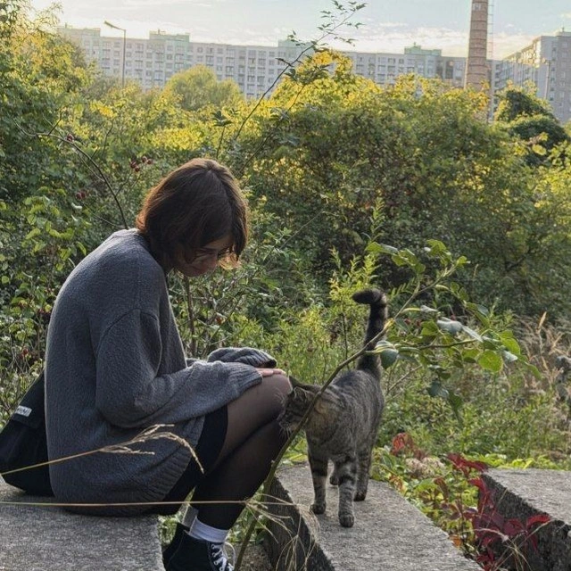

Про нас
SmakHub — відкрита книга рецептів, де кожен може поділитися власною стравою.
Наша місія
Допомагати людям щодня легко готувати смачну їжу вдома: від вибору рецепта під наявні продукти до впевненого виконання. Ми хочемо, щоб кулінарні навички розвивалися поступово, без стресу й зайвих зусиль.
SmakHub поєднує зручний пошук за назвою, категорією та інгредієнтами, збереження улюблених рецептів і фото кожної страви.
Які проблеми ми вирішуємо
- Складно швидко знайти рецепт саме з тих продуктів, що є вдома.
- Багато сайтів розраховані на досвідчених кухарів, а студентам і школярам потрібні прості, швидкі та бюджетні страви.
- Немає зручного способу зберегти вдалі рецепти й повернутися до них пізніше.
- Бракує довіри до випадкових рецептів без оцінок і чітких інструкцій.
Для кого SmakHub
- Студенти — прості рецепти до 30 хвилин із доступних продуктів.
- Школярі — безпечні рецепти з детальними кроками та фото.
- Кухарі-початківці — рецепти за рівнем складності та підбір за власними смаками.
Чим ми відрізняємося
Відкрита платформа
На відміну від блогів одного автора, рецепти додають самі користувачі, а перед публікацією їх перевіряє модератор.
Персональна колекція
Ви можете зберігати рецепти, залишати відгуки та збирати власну добірку, чого не вистачає багатьом кулінарним блогам.
Якість замість кількості
Ми робимо акцент на чітких інструкціях, часі приготування, складності та якісних фото, а не на кількості рецептів, як у великих міжнародних платформах на кшталт Cookpad.
Команда
Проєкт створили студенти III курсу НН Інституту прикладного системного аналізу КПІ ім. Ігоря Сікорського.
-
Калюх Р. Д.
Група КА-41
-
Худікова М. В.
Група КА-44
-

Корецька М. В.
Група КА-45
Є питання чи пропозиції? Напишіть нам.